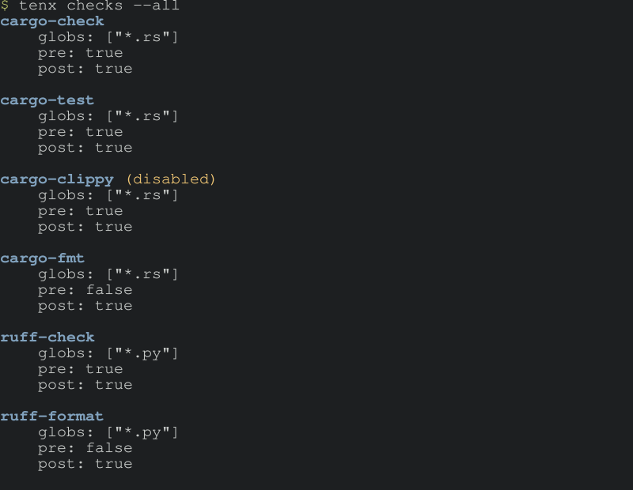

Checks
If Tenx has a unifying theory, it's this: models hallucinate, and the more thoroughly we can connect responses to a ground truth, the more useful our results will be. Add to this the fact that when a model diverges from this ground truth we can automatically ask the model to iterate towards it, and you have the core of Tenx's philosophy.
Checks are the mechanism by which we connect model responses to ground truth. While Tenx has a small number of built-in checks (which will rapidly grow in future versions), the checks mechanism is completely general and any command can be configured to be a check. All that is needed is for us to be able to detect failure, and for the check command to provide sufficient details in its output to steer the model.
Checks can modify files, so they are also how we run automated formatters over the code produced by the model. Typically, checks are run before the model is invoked to make sure the code is in a consistent state, and then again after the model has produced output, to guide the model if it produces output that doesn't meet the checks. Some checks only make sense after the model has run, so checks can be configured to run pre or post or both.
Let's take a look at Tenx's built-in checks:

There are a few things to note here. Each check has a glob pattern that
determines when it runs - a check only runs if its glob pattern matches a file
that was edited during the session. Checks are ordered - so cargo check
will perform type checking before cargo test runs unit tests. Lastly,
checks can be disabled by default - cargo clippy is a bit too noisy to run by
default, so the user has to enable it in their config or on the command line
with the --check flag.